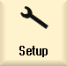

The tool management allows you to define all real tool magazines and internal magazines with the appropriate properties through the operating software and to link them channel-specifically to the TO unit. You can configure the relationships between tool magazine, griper and spindle via a tree view.
Calling the tool management
You open the tool management window as follows:
|  | 1. | Select the "Start-up" operating area. |
| | 2. | Press the "NC" and "Tool management" softkeys. |
The "Tool management" window opens. |
General sequence
The following steps are required to create a tool management:
Creating a TO unit
Define buffer locations
Define loading location
Create magazine configuration
Link assignments
| Note |
When you create a new TO unit, a buffer location with a spindle location, a loading magazine with a loading location, and a real magazine with five locations are set up by default. |
Meaning of the symbols
Meaning of the tree view
The following folders are available in the tree view:
Active data: Configure and activate the magazine management.
Examples: Copy templates into the "Active data" folder.
Network/USB: Copy the new magazine managements into the "Active data" folder or use existing ones for other systems.